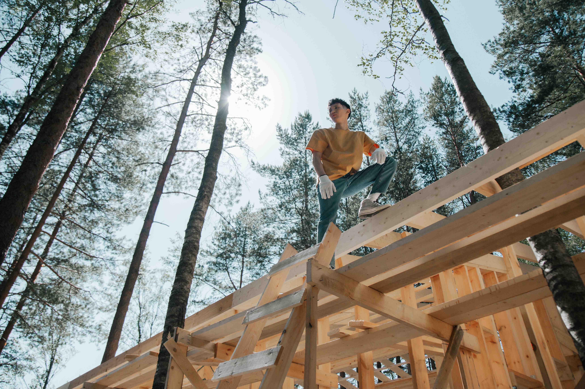
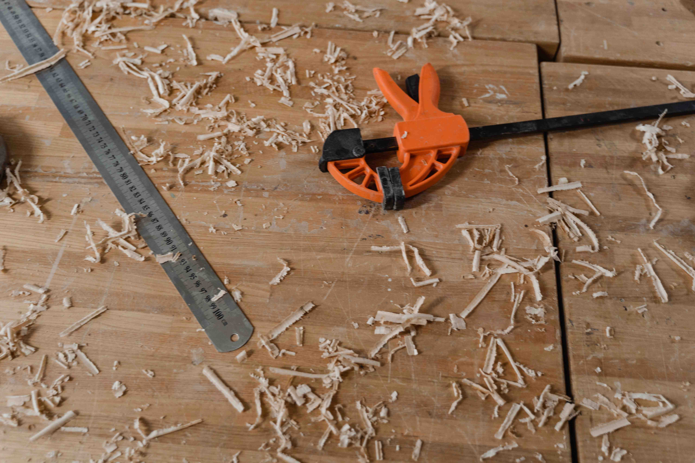
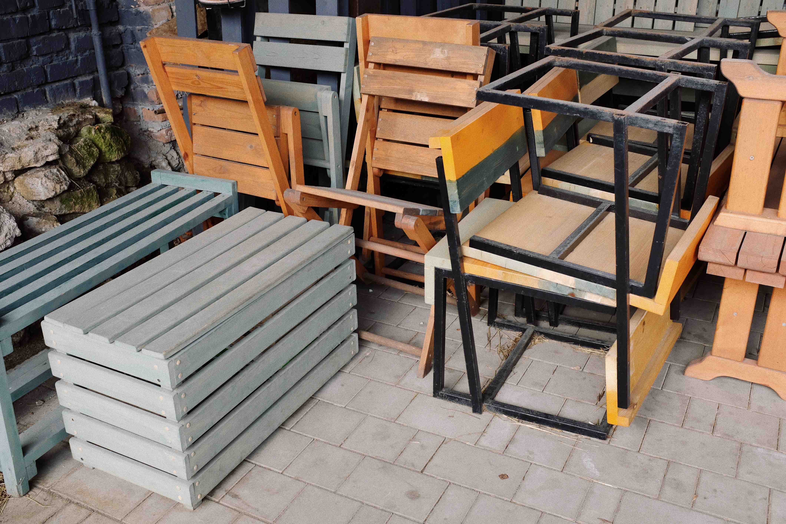
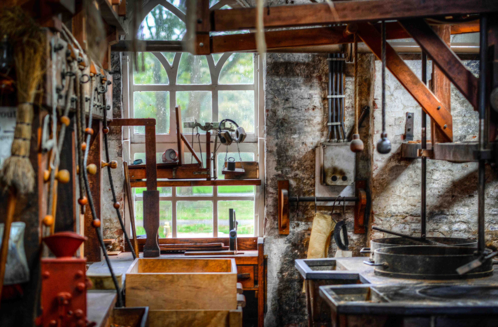
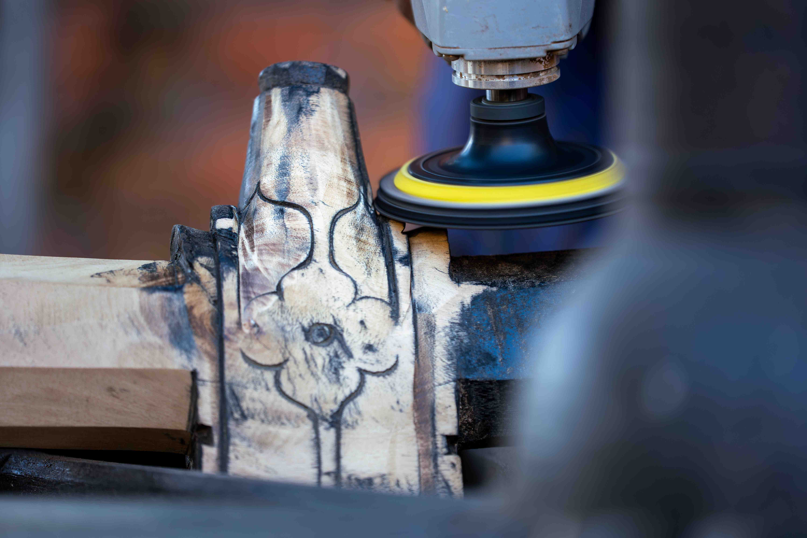

01 / HAND FINISHING
French Polishing
A traditional, hand-applied shellac finish that brings depth to suitable wood surfaces.
A finish that celebrates the grain.
Learn more ↗Request a quote →THE ART OF RESTORING WHAT MATTERS
Professional French polishing, wood refinishing and furniture restoration. Revive worn surfaces. Rediscover the natural character of wood.

OUR CRAFTSMANSHIP
A well-loved table. An inherited cabinet. A chair with a story. Our approach starts with understanding the piece, its existing finish and how you use it.
From a small surface repair to careful refinishing, we select the least invasive suitable approach and discuss the result before work begins.
Discover our process ↗OUR EXPERTISE
Specialist finishing, thoughtful repairs and a considered approach to every piece.
A traditional, hand-applied shellac finish that brings depth to suitable wood surfaces.
A finish that celebrates the grain.
Learn more ↗Request a quote →
Thoughtful repairs and refinishing for treasured pieces, with original character considered first.
Keep the pieces that matter.
Request a quote →
Assessment and treatment of scratches, worn patches, water rings and heat marks.
A considered approach to every mark.
Request a quote →BEFORE & AFTER
Move the slider to explore the comparison layout. Replace these sample assets with photographs of the same restoration project.


PROJECT LAYOUT · SAMPLE CONTENT
WHY OUR WORKSHOP
We examine the existing finish and damage before recommending treatment.
Shellac, varnish and other finishes serve different purposes. The piece guides our choice.
A discussed scope, an agreed finish and practical aftercare help you know what to expect.
THE RESTORATION PROCESS
Understand the wood, finish, damage and intended use.
Clean and repair as appropriate, protecting the original character.
Blend repairs and apply the finish selected for the piece.
Review the sheen and share care advice for everyday use.
FURNITURE WE RESTORE
Furniture and architectural woodwork deserve an approach shaped around their materials, construction and history.

WHERE WE WORK

TRADITIONAL FRENCH POLISHING
French polishing builds thin layers of shellac dissolved in alcohol, applied by hand with a polishing pad. It can enhance the grain and achieve a carefully controlled sheen.
It is different from varnishing or lacquer finishing. Suitability depends on the existing surface and use; shellac needs protection from heat, standing water and alcohol.
Read our finishing FAQs ↗
CUSTOMER STORIES
The table still feels like ours, just cared for. I appreciated the explanation of the finish and how to look after it.
We discussed what could be preserved before making any changes. That attention to the cabinet’s character mattered to me.
The assessment helped me understand which marks could be treated and what an honest result would look like.
A GUIDE TO PRICING
Indicative prices in GBP. Every piece is assessed individually; a final quotation depends on the agreed work.
LOCALIZED CARE
£75illustrative starting price
Assessment and suitable localized treatment for a small worn area.
Cost depends on size, condition, existing finish and preparation.
Request an assessment ↗RENEW THE SURFACE
£280illustrative starting price
Preparation and refinishing of a tabletop with an agreed finish.
Cost depends on size, condition, existing finish and preparation.
Request an assessment ↗PRESERVE THE CHARACTER
£420illustrative starting price
A tailored scope for repairs and finishing of a furniture piece.
Cost depends on size, condition, existing finish and preparation.
Request an assessment ↗YOUR QUESTIONS
No. The existing finish, wood, condition and intended use determine suitability. A high-use surface may need a different protective finish.
Some marks can be treated locally; others extend into the wood or require broader refinishing. An assessment sets realistic expectations.
Both options may be suitable. Fitted woodwork often needs on-site work, while more involved furniture restoration may benefit from workshop conditions.
Share the furniture type, approximate dimensions, existing finish if known, a description of the damage and clear photographs. The full booking page will be added in a later stage.
Use coasters and mats, avoid standing water and alcohol, and protect the surface from heat. Follow the specific aftercare instructions for your finish.
Timing depends on repairs, preparation, the selected finish and curing requirements. Agree the expected schedule after assessment.
LET’S START WITH YOUR PIECE
Share a few details to prepare your assessment enquiry.
Prepare and download your enquiry for an assessment.
Tell us the furniture type, approximate dimensions and how you use it.
Describe marks, loose joints or worn areas. Clear photographs help show the details.
Share the colour and sheen you have in mind. Suitability and the scope of work come first.
RESTORE. PRESERVE. ENJOY.